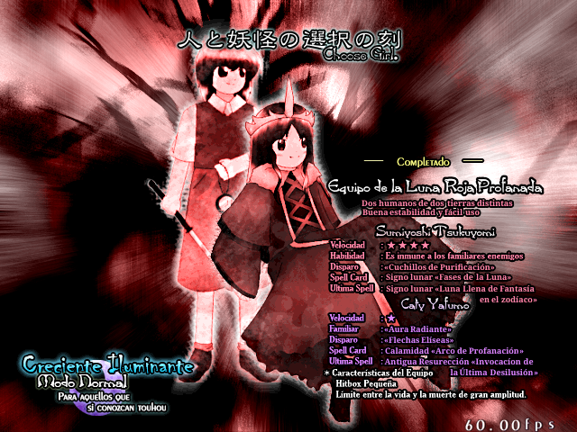
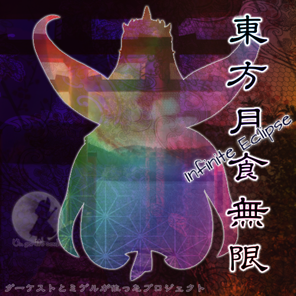

Infinite Eclipse is a texture replacement mod for Touhou 8 IN - Imperishable Night, it's development started since December, 2023 and it was finally released on February 4th, 2025 (wait what) as a texture pack that transforms TH08 into a game that follows the same AU than TH Caty, replacing stage 4 bosses, stage 6B boss, extra boss, half of the playable characters and more. This mod also includes a bit of Terraria things.
This was the mod with which we started all this bunch of art and lore, but at least the fourth on being released completely.
You can choose between two new teams or it's sepparated characters:

Unless the previous retexture mods, IE has special shottypes for the replaced characters, so you will see very broken characters.
With theese characters, you should go through the stages to fight enemies like the original game. But if you decide to use the non-replaced teams, you will still be able to appreciate funny interactions.
This story follow TH Caty's AU, but also IN's incident, so this could be considered a sequel. In resume:
The moon was replaced with a fake one, the Hakurei Shrine maiden and the Youkai sage went to resolve it, but the Youkai had an special apprentice who wanted to help by her own.
In parallel, a powerful master sent their apprentice to stop an entity who is trying to solve it by force. Both apprentices would clash and form a team and recover the moo together.
But things could change course after they resolve it...
This mod is a kind of addon, so not all the content is replaced, replaced music includes boss themes, and last word theme.
Authors:
The music make feel the player more SPEEEED.

Kanji: 東方月食無限
Type: Retexture
Release: February 4th, 2025
Developers: Dark Caty, Mint
Dimension: Actual Gensokyo
Music: FalKKonE, RichaadEB
Credits: ZUN, Re-Logic, Feny
Languaje: Chilean Spanish